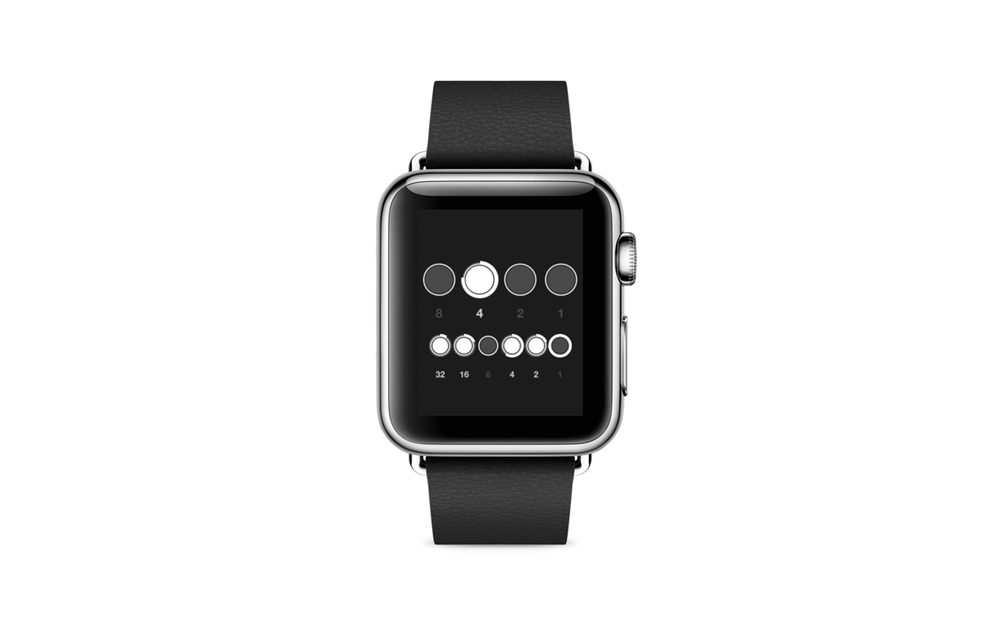
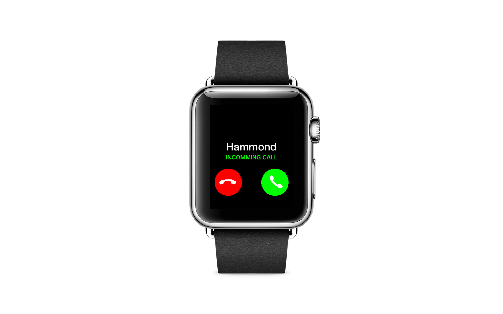

Rapid Prototyping
Most designers today create static mockups to communicate app ideas. But increasingly apps are anything but static, this is why facebook’s design team created Origami a tool for interaction design. A tool built upon a development language that I have 10 years experience with Quartz Composer.
This page consists of open source Origami examples that were created in under two hours. I hope they illurstate the need for prototyping and help with the learning of Quartz Composer and Origami.
PROTOTYPE
iBeacons
A Quartz Composer and Origami template composition to allow for UI creation and UX testing. Add as many beacons are require, position and color, each beacon communicates its ‘Near, Immermediate and Far’ signals. Core location data is used to calculate the angle of beacon.
PROTOTYPE
BBC Radio App Clone
Inspired to recreate the scrolling dial navigation prototype Source code available here github.com/justaddmusic/Radio-Dial-Mobile-Navigation
PROTOTYPE
Continuous Circular Image Scrolling
Example for Quartz Composer and Origami origami.facebook.com Source available at github.com/justaddmusic/Circular-Image-Scroller My first full day working with Facebooks additions to Quartz Composer for mobile UI/UX development This composition shows how to use a circular scrolling mechanism with rubber tension, magnet forces and snapping at boundaries. Look in the composition for notes on bugs I found with the interaction2/layer patch and masks


